빈 무덤에서 성령강림까지, 그림 여섯 점으로 걷는 부활의 50일. 부활절부터 성령강림절까지 주일 여섯 번을 골라, 그림 한 점에 질문 하나. 이름을 부르신 아침에서 불꽃처럼 오신 성령까지.
1 그림을 함께 보고2 질문을 던지고3 그 시절로 가 본 뒤4 본문을 같이 읽어요
그림 아래 아이에게 보여 주기를 누르면 그림과 그 땅의 옛 사진을 화면 가득 띄우고, 질문을 하나씩 넘길 수 있어요. 흑백 사진은 누르면 AI로 색을 입힌 가상 복원으로 바뀌어요.
검수 전 초안이에요. AI가 출처를 모아 쓴 글이라, 카드마다 맨 아래 ‘근거 보기’와 대조해 확인해 주세요.
여섯 장면을 잇는 두 말: “알아보다”(눅 24:31)와 “보았다”(요 20:18). 마리아도, 엠마오의 두 제자도, 호숫가의 제자들도 처음에는 예수님을 알아보지 못했어요. 이름을 부르실 때, 빵을 떼실 때, 그물이 가득 찰 때 알아보았지요. “내가 주를 보았다”는 소식은 승천과 성령강림을 지나 땅 끝까지 퍼져 나가요(행 1:8).
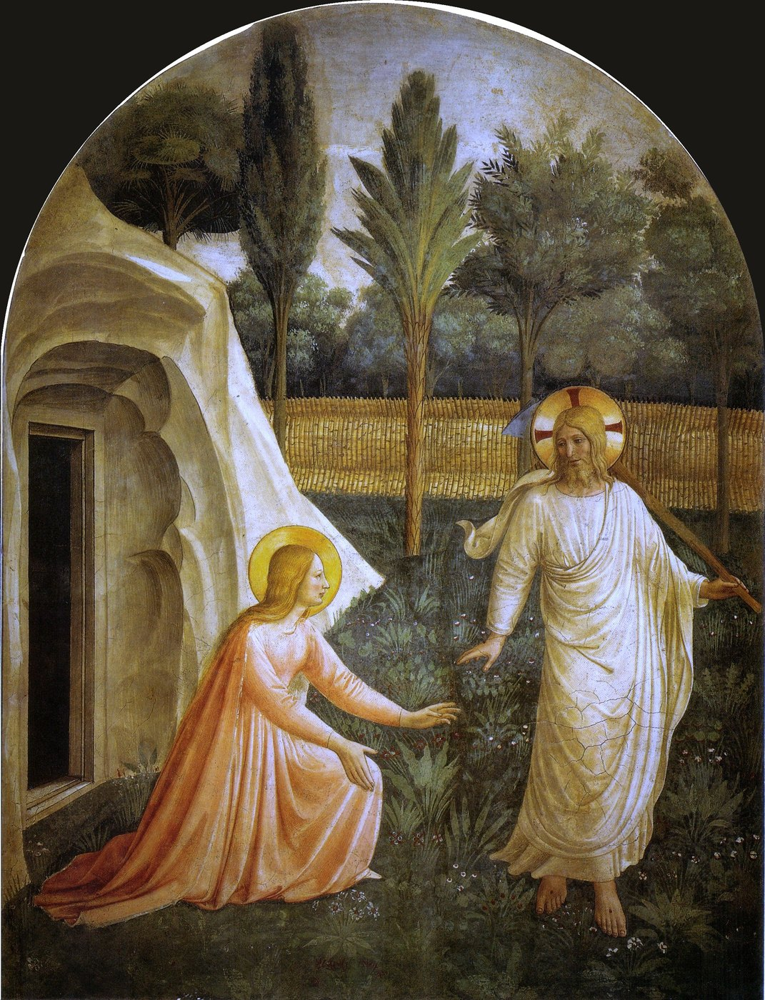
「나를 붙들지 말라」 프라 안젤리코, 1440년 무렵 이탈리아 피렌체, 산마르코 수도원 1번 방
부활절 · 이름을 부르신 아침3월 28일 부활절 · 요한복음 20:1~18
이 그림이 여는 질문
마리아는 왜 예수님을 못 알아봤어요?
꽃이 핀 이른 아침의 동산, 괭이를 멘 사람. 마리아는 그를 동산지기인 줄 알았습니다.
그림 속에서 찾아보기
예수님 어깨에 멘 것을 찾아보세요. 무엇에 쓰는 도구일까요?
풀밭에 핀 작은 빨간 꽃들을 찾아보세요. 예수님 손과 발에 난 자국과 같은 색이에요.
마리아 뒤의 바위 굴을 보세요. 무엇일까요? 안은 어떻게 되어 있을까요?
이야기
“안식 후 첫날 일찍이 아직 어두울 때에” 막달라 마리아가 무덤에 왔다가 돌이 옮겨진 것을 보았어요(20:1). 마리아는 무덤 밖에 서서 울었어요. 뒤로 돌아서자 누군가 서 있었지만 “예수이신 줄은 알지 못하더라”(20:14). 마리아는 “그가 동산지기인 줄 알고” 주님의 시신을 어디 두었는지 알려 달라고 했어요(20:15).
“예수께서 마리아야 하시거늘 마리아가 돌이켜 히브리 말로 랍오니 하니 (이는 선생님이라는 말이라)”(20:16). 이름을 부르는 목소리에 마리아는 곧 알아보았어요. 예수님은 “나를 붙들지 말라” 하시고, 형제들에게 가서 전하라고 하셨어요(20:17). 마리아는 달려가 말했어요. “내가 주를 보았다”(20:18). 부활하신 예수님을 처음 만나고, 처음으로 그 소식을 전한 사람이 바로 마리아예요.
이탈리아 피렌체의 산마르코 수도원에는 수도사들이 기도하고 잠자던 작은 방이 44개 있어요. 도미니코회 수도사였던 화가 프라 안젤리코와 그의 공방은 거의 모든 방 벽에 예수님 이야기를 하나씩 그렸어요. 이 그림은 1번 방에 있는 높이 166센티미터의 벽화예요. 예수님이 괭이를 메고 계신 것은 마리아가 그분을 동산지기로 여긴 일을 떠올리게 하지요. 풀밭의 작은 빨간 꽃들은 예수님 손발의 못 자국과 같은 색으로 칠했어요.
알고 보면
“나를 붙들지 말라”(20:17)를 라틴어 성경에서는 ‘놀리 메 탄게레(Noli me tangere)’라고 해요. 그래서 부활하신 예수님과 마리아가 만나는 장면을 그린 그림들을 모두 이 이름으로 불러요. 요한은 예수님이 묻히신 곳이 “동산” 안의 새 무덤이었다고 적었어요(19:41). 그러니 동산에서 만난 사람을 동산지기로 여길 만했지요.
그 시절로 가 보기
그곳은 · 예루살렘 성 밖의 동산 무덤예수님이 십자가에 못 박히신 곳 가까이에 동산이 있었고, 그 안에 새 무덤이 있었어요(요 19:41~42). 4세기부터 그리스도인들은 지금의 성묘 교회 자리를 그곳으로 기억해 왔어요. 그때는 성벽 밖이었지만, 도시가 넓어져 지금은 옛 성 안에 있어요.
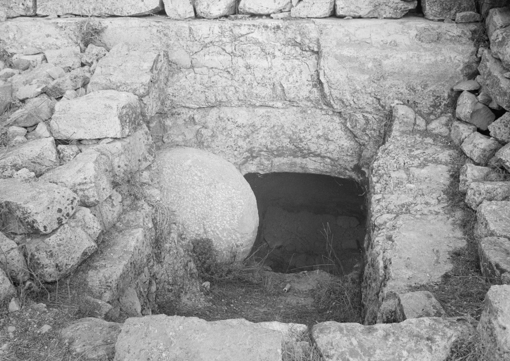
아부 고시의 굴리는 돌 무덤 · 1940년대 둥근 돌을 홈을 따라 굴려 입구를 여닫는 옛 유대인 무덤이에요. 여인들도 “누가 우리를 위하여 무덤 문에서 돌을 굴려 주리요” 하고 걱정했지요(막 16:3). 고고학자 아모스 클로너가 예루살렘 둘레에서 그 시절 무덤 900여 곳을 살펴보니, 이렇게 둥근 돌로 막은 무덤은 네 곳뿐이었고 대부분은 네모난 돌로 막았대요. 원본 크게 보기가상 복원 · AI가 색을 짐작해 입힌 것이라 실제 색과 다를 수 있어요.
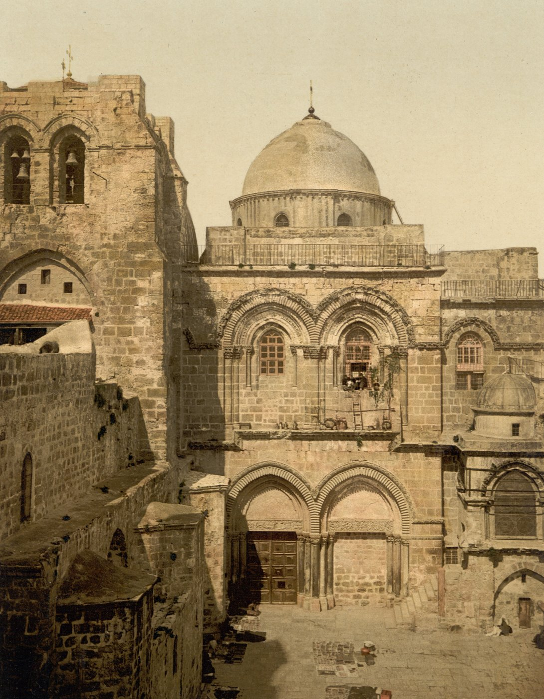
성묘 교회 정면 · 1890년대 컬러 인쇄본 예수님이 묻히셨다가 살아나신 곳으로 기억해 온 자리에 선 교회예요. 콘스탄티누스 황제가 326년 무렵 짓기 시작해 335년에 봉헌했고, 지금 건물의 큰 틀은 십자군이 다시 지어 1149년에 봉헌한 모습이에요. 원본 크게 보기
눈 감고 상상해 보기울다가 고개를 들었는데, 낯선 사람인 줄 알았던 분이 내 이름을 부른다면, 그 목소리를 어떻게 알아볼까요?
조심할 점 “나를 붙들지 말라”를 ‘만지지 마, 저리 가’로 오해하지 않게, 예수님이 마리아에게 맡기신 심부름(20:17)과 함께 이야기해 주세요. 막달라 마리아를 ‘죄 많은 여인’으로 소개하지 마세요. 그렇게 본 것은 중세의 전통이고, 성경은 일곱 귀신이 나간 여인으로 소개해요(눅 8:2).
함께 보기 · 선생님이 더 읽을 것
함께 느끼기 방의 ‘부활절 정원’(돌을 굴려 여는 아침)과 ‘부활절 해돋이 예배’ 활동을 이어서 해 보세요.
함께 느끼기 방의 「수태고지」도 프라 안젤리코의 그림이에요. 천사의 소식을 듣는 마리아와, 부활의 소식을 전하러 가는 마리아를 나란히 보세요.
「의심하던 도마」 치마 다 코넬리아노, 1502~1504년 무렵 영국 런던, 내셔널 갤러리
부활절 둘째 주일 · 손을 내미신 예수님4월 4일 부활절 둘째 주일 · 요한복음 20:19~29
이 그림이 여는 질문
도마는 왜 만져 봐야 믿는다고 했어요?
제자들이 빙 둘러선 가운데, 도마가 손가락을 뻗어 예수님의 상처에 댑니다.
그림 속에서 찾아보기
도마를 찾아보세요. 손가락이 어디에 닿아 있나요?
예수님 바로 곁, 수염이 없는 젊은 제자를 찾아보세요. 옛 그림에서는 요한을 이렇게 젊게 그리곤 했어요.
주황빛 겉옷을 입고 가슴에 손을 얹은 흰 수염의 제자를 찾아보세요. 다른 제자들의 얼굴은 어때 보이나요?
이야기
부활하신 날 저녁, 제자들은 무서워서 문을 꼭 닫고 모여 있었어요. 그때 예수님이 오셔서 “너희에게 평강이 있을지어다” 하시고 손과 옆구리를 보여 주셨어요(20:19~20). 그런데 도마는 그 자리에 없었어요. 친구들이 “우리가 주를 보았노라” 하자 도마가 말했어요. “내가 그의 손의 못 자국을 보며 내 손가락을 그 못 자국에 넣으며 내 손을 그 옆구리에 넣어 보지 않고는 믿지 아니하겠노라”(20:25).
여드레 뒤, 이번에는 도마도 함께 있을 때 예수님이 다시 오셨어요. 그리고 도마에게 먼저 말씀하셨어요. “네 손가락을 이리 내밀어 내 손을 보고 네 손을 내밀어 내 옆구리에 넣어 보라”(20:27). 도마는 고백했어요. “나의 주님이시요 나의 하나님이시니이다”(20:28). 예수님은 “보지 못하고 믿는 자들은 복되도다” 하셨어요(20:29). 바로 지금의 우리를 두고 하신 말씀이지요.
베네치아에서 활동한 화가 치마 다 코넬리아노가 1502~1504년 무렵 그린 큰 제단화예요. 높이가 3미터 가까이 돼요. 베네치아 북쪽 포르토그루아로에서 병원 네 곳을 운영하던 ‘성 도마 형제회’가 주문했어요. 남아 있는 장부에는 그림을 실어 나를 상자값, 짐꾼 삯, 화가의 조수들에게 준 팁까지 적혀 있어요. 그런데 화가는 그림값의 절반도 제때 받지 못해 소송까지 했고, 1509년에야 다 받았대요. 1870년부터 영국 런던의 내셔널 갤러리에 있어요.
알고 보면
‘디두모’(쌍둥이)라 불린 도마(20:24)는 의심만 한 제자가 아니에요. 예수님이 위험한 유대로 다시 가시려 할 때 “우리도 주와 함께 죽으러 가자”고 말한 사람이 도마였어요(11:16). 예수님이 떠나신다고 하실 때도 “그 길을 어찌 알겠사옵나이까” 하고 솔직하게 물었지요(14:5). 그 물음에 예수님은 “내가 곧 길이요 진리요 생명이니” 하고 대답하셨어요(14:6).
그 시절로 가 보기
그곳은 · 문을 닫아건 예루살렘의 집성경은 제자들이 모인 집이 어디인지 말하지 않아요. 오래전부터 그리스도인들은 시온산의 ‘다락방’을 마지막 만찬을 나눈 곳이자, 부활하신 예수님이 나타나신 곳, 성령이 오신 곳으로 기억해 왔어요.
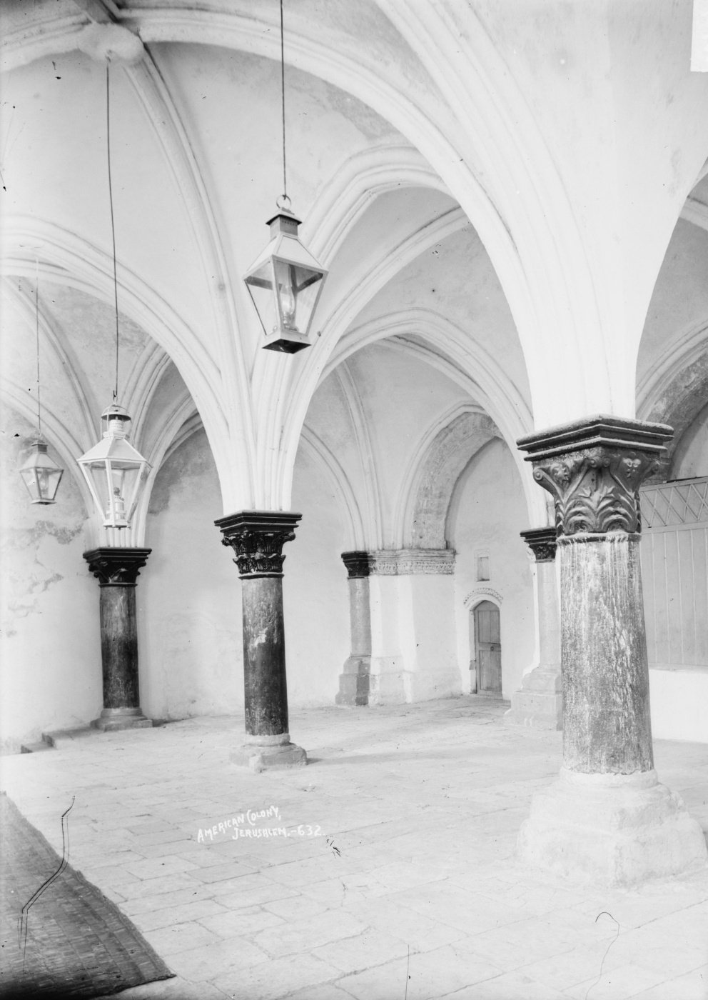
예루살렘 ‘마지막 만찬의 방’ · 1898~1946년 사이 시온산의 ‘체나콜로’(다락방)예요. 지금의 뾰족한 아치 방은 14세기 무렵 지은 건물이고, 1523년에는 모스크로 바뀌어 기도하는 벽감이 생기기도 했어요. 2천 년 전 방 그대로는 아니지만, 순례자들은 이곳에서 문을 닫고 모였던 제자들을 떠올려요. 원본 크게 보기가상 복원 · AI가 색을 짐작해 입힌 것이라 실제 색과 다를 수 있어요.
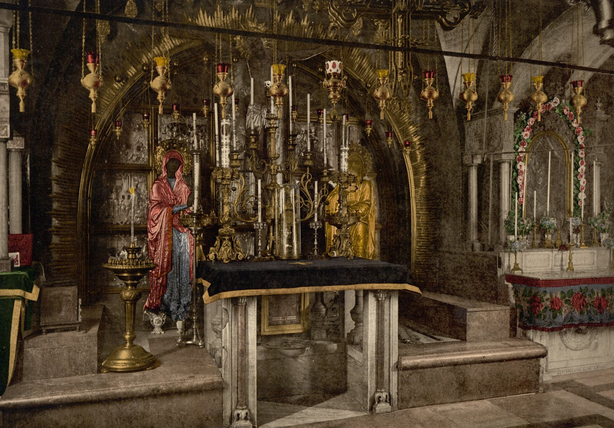
골고다의 그리스 정교회 제단 · 1890년대 컬러 인쇄본 예수님이 십자가에 못 박히신 곳으로 기억해 온 골고다 언덕은 지금 성묘 교회 안에 있어요. 도마가 보고 싶어 한 ‘못 자국’이 생긴 곳이지요. 흑백 원판에 색을 입혀 찍어 낸 ‘포토크롬’이에요. 원본 크게 보기
눈 감고 상상해 보기모두가 본 것을 나만 못 봤을 때의 서운함. 그런데 예수님이 바로 나를 위해 다시 오셔서 손을 내미신다면 어떨까요?
부활절 셋째 주일 · 빵을 떼실 때4월 11일 부활절 셋째 주일 · 누가복음 24:13~35
이 그림이 여는 질문
엠마오로 가던 제자들은 언제 예수님을 알아봤어요?
저녁 식탁, 빵 위로 들린 손. 그 순간 두 제자는 함께 걸어온 낯선 사람이 누구인지 알아봅니다.
그림 속에서 찾아보기
식탁 끝에 아슬아슬하게 걸친 과일 바구니를 찾아보세요. 곧 떨어질 것 같나요?
의자에서 벌떡 일어나려는 사람, 두 팔을 활짝 벌린 사람을 찾아보세요. 둘은 왜 이렇게 놀랐을까요?
모자를 쓰고 서 있는 사람을 보세요. 이 사람도 무슨 일인지 알았을까요?
이야기
예수님이 부활하신 그날, 제자 두 사람이 “예루살렘에서 이십오 리 되는 엠마오라 하는 마을로” 가고 있었어요(24:13). 예수님이 가까이 와서 함께 걸으셨지만 “그들의 눈이 가리어져서 그인 줄 알아보지 못하”였어요(24:16). 두 사람은 “슬픈 빛을 띠고” 예루살렘에서 있었던 일을 이야기했고(24:17), 예수님은 모세와 모든 선지자의 글로 시작해 성경을 자세히 풀어 주셨어요(24:27).
마을에 이르자 두 사람은 “우리와 함께 유하사이다 때가 저물어가고 날이 이미 기울었나이다” 하고 붙잡았어요(24:29). 식탁에서 예수님이 “떡을 가지사 축사하시고 떼어 그들에게 주시니 그들의 눈이 밝아져 그인 줄 알아 보더니 예수는 그들에게 보이지 아니하시는지라”(24:30~31). 두 사람은 “우리 속에서 마음이 뜨겁지 아니하더냐” 하고는 그 길로 예루살렘으로 돌아갔어요(24:32~33).
카라바조가 1601년 로마의 귀족 치리아코 마테이를 위해 그린 그림이에요. 사람들을 실제 크기로 그려서 식탁이 우리 바로 앞에 놓인 것 같아요. 카라바조는 제자들을 해진 옷에 주름진 얼굴의 일하는 사람들로 그리고, 예수님은 수염 없는 젊은 모습으로 그렸어요. 다른 세상에서 온 사람처럼 보이지요. 1839년부터 런던 내셔널 갤러리에 있어요. 카라바조는 5년 뒤 더 어둡고 조용한 엠마오 그림을 한 번 더 그렸어요(밀라노 브레라 미술관).
알고 보면
엠마오가 정확히 어디인지는 아직도 몰라요. 오래된 성경 사본마다 거리가 ‘60스타디온’(이십오 리, 약 11킬로미터)과 ‘160스타디온’(약 30킬로미터)으로 다르게 적혀 있거든요. 그래서 예루살렘 서쪽의 여러 마을, 엠마오-니코폴리스, 엘쿠베이베, 아부 고시, 모차가 저마다 엠마오로 꼽혀요.
그 시절로 가 보기
그곳은 · 예루살렘에서 서쪽으로 가는 길두 제자는 해 질 녘 엠마오에 닿았다가, “곧 그 때로 일어나” 예루살렘으로 돌아갔어요(24:29, 33). 지금으로 치면 11킬로미터쯤 되는 길을 하루에 두 번 걸은 셈이에요.
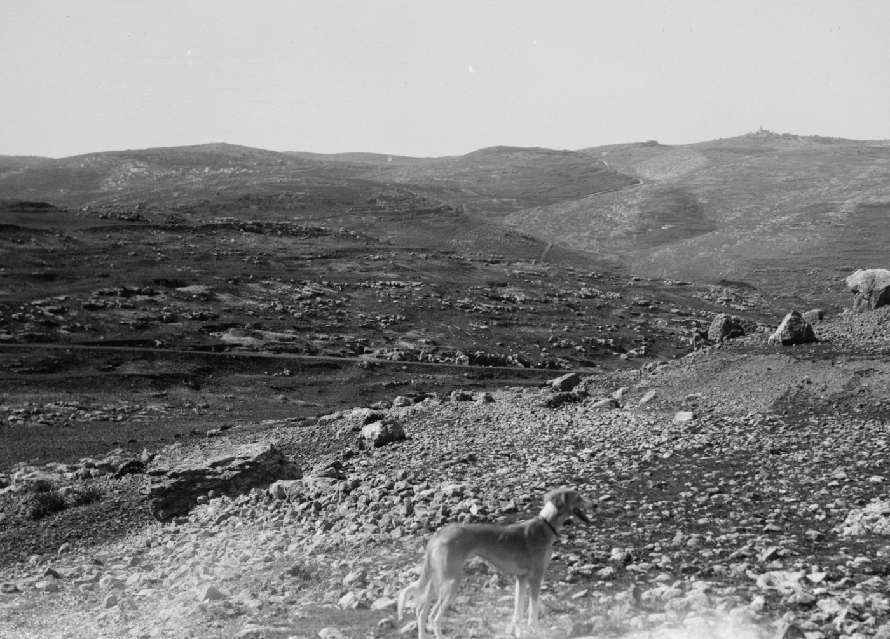
엠마오로 가는 로마 시대 길 · 1930년대 사진가의 기록장에 남은 제목은 ‘엠마오로 가는 로마 길, 멀리 미스바(네비 삼윌)’예요. 멀리 보이는 언덕 네비 삼윌은 선지자 사무엘의 무덤으로 전해지는 곳으로, 1099년 십자군이 처음 예루살렘을 바라본 언덕이기도 해요. 원본 크게 보기가상 복원 · AI가 색을 짐작해 입힌 것이라 실제 색과 다를 수 있어요.
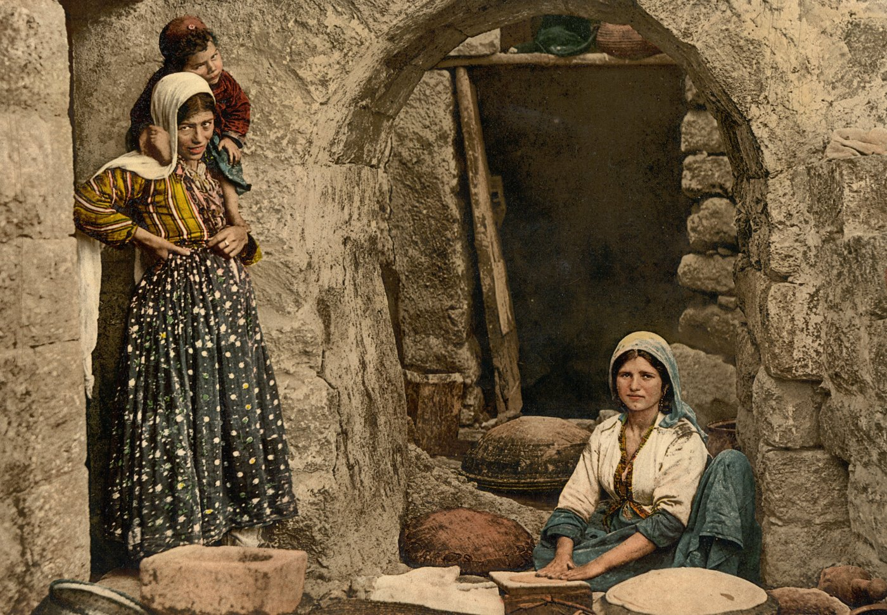
빵을 굽는 시리아 농부 · 1890년대 컬러 인쇄본 둥글고 납작한 빵 반죽을 펴는 모습이에요. 예수님이 엠마오의 식탁에서 떼어 주신 빵도 이렇게 손으로 떼어 나누는 빵이었을지 몰라요. 흑백 원판에 색을 입혀 찍어 낸 ‘포토크롬’이에요. 원본 크게 보기
눈 감고 상상해 보기몇 시간을 함께 걸었는데도 몰랐던 사람. 빵을 떼어 주는 손을 보는 순간 알아본다면, 그다음엔 무엇을 하고 싶을까요?
부활절 넷째 주일 · 와서 조반을 먹으라4월 18일 부활절 넷째 주일 · 요한복음 21:1~14
이 그림이 여는 질문
예수님이 제자들한테 아침밥을 차려 주셨어요?
밤새 한 마리도 못 잡았던 그물이 물고기로 가득합니다. 베드로는 배를 기다리지 못하고 물로 뛰어듭니다.
그림 속에서 찾아보기
물속에 있는 베드로를 찾아보세요. 어디로 가고 있나요?
배 위에서 그물을 끌어 올리는 제자들을 세어 보세요. 물고기가 보이나요?
호수 건너 뾰족한 산을 찾아보세요. 그 뒤로 희미하게 보이는 하얀 봉우리도 찾아보세요. 그림이 걸린 제네바에서 바라보이는 진짜 산이에요.
이야기
부활하신 예수님이 디베랴 호수에서 제자들에게 다시 나타나신 이야기예요. 시몬 베드로가 “나는 물고기 잡으러 가노라” 하자 다른 제자들도 따라나섰지만, “그 날 밤에 아무 것도 잡지 못하였”어요(21:3). 날이 새어 갈 때 예수님이 바닷가에 서셨지만 제자들은 알아보지 못했어요(21:4).
“그물을 배 오른편에 던지라 그리하면 잡으리라”(21:6). 그물을 던지자 물고기가 너무 많아 들어 올릴 수가 없었어요. 예수님이 사랑하시던 제자가 “주님이시라” 하자, 베드로는 겉옷을 두르고 바다로 뛰어내렸어요(21:7). 뭍에 오르니 “숯불이 있는데 그 위에 생선이 놓였고 떡도 있더라”(21:9). 그물에는 큰 물고기가 “백쉰세 마리”나 들었는데도 찢어지지 않았지요(21:11). 예수님은 말씀하셨어요. “와서 조반을 먹으라”(21:12).
독일에서 태어나 스위스 바젤에서 활동한 화가 콘라트 비츠가 1444년 제네바 성 베드로 대성당의 제단화로 그린 그림이에요. 비츠는 갈릴리 호수를 그림이 걸릴 제네바의 호수, 레만 호로 옮겨 그렸어요. 왼쪽부터 부아롱 산줄기, 가운데 뾰족한 몰 산, 오른쪽 끝의 살레브 산이 보이고, 멀리 희미하게 몽블랑 쪽의 하얀 봉우리들도 보여요. 그래서 이 그림은 실제 풍경을 알아볼 수 있게 옮긴, 유럽에서 가장 이른 풍경화 가운데 하나로 꼽혀요. 비츠는 이 그림을 그리고 1~2년 뒤 세상을 떠났어요.
알고 보면
1986년 큰 가뭄으로 갈릴리 호수의 물이 줄었을 때, 어부 형제가 진흙 속에서 2천 년 된 고기잡이배를 찾아냈어요. 길이 8.27미터, 폭 2.3미터로, 기원전 120년에서 기원후 40년 사이의 배예요. 예수님과 제자들이 탔던 바로 그 배라는 증거는 없지만, 그 시절 갈릴리 어부들은 이런 배를 탔어요. 지금은 호숫가 기노사르의 박물관에 있어요.
그 시절로 가 보기
그곳은 · 디베랴 호수(갈릴리 바다)요한은 갈릴리 바다를 ‘디베랴 호수’라고 불러요(21:1). ‘바다’라고 부르지만 사실은 민물 호수예요. 베드로와 안드레, 야고보와 요한은 원래 이 호수의 어부였어요.
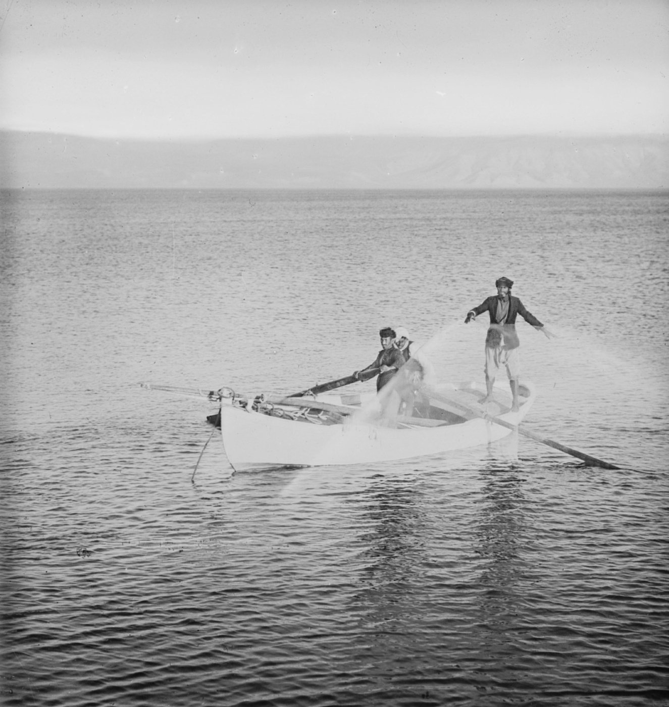
갈릴리에서 그물을 던지는 어부들 · 1930년대 가장자리에 추를 단 둥근 그물, 투망을 던지는 모습이에요. 투망은 지름이 5~6미터쯤 되는데 한 사람이 던져요. 물에 내려앉는 모습이 꼭 낙하산 같지요. 2천 년 전 갈릴리 어부들도 이런 그물을 썼어요. 원본 크게 보기가상 복원 · AI가 색을 짐작해 입힌 것이라 실제 색과 다를 수 있어요.
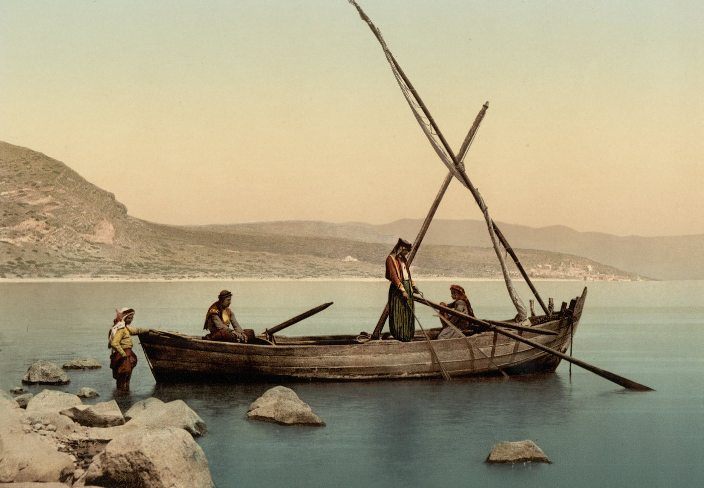
디베랴 호수의 고깃배 · 1890년대 컬러 인쇄본 130년쯤 전 디베랴(티베리아스) 앞 호수에 떠 있는 고깃배예요. 흑백 원판에 색을 입혀 찍어 낸 ‘포토크롬’이에요. 원본 크게 보기
눈 감고 상상해 보기밤새 헛수고를 하고 지쳐 돌아오는 아침. 누가 먼저 불을 피우고 아침을 차려 놓고 기다린다면 어떤 마음이 들까요?
조심할 점 ‘153’이라는 숫자에는 여러 풀이가 있지만, 아이들에게는 ‘그물이 찢어지지 않을 만큼 넉넉했다’는 데 머물러도 충분해요. 큰 아이들과는 아침을 먹은 뒤 예수님이 베드로에게 세 번 “네가 나를 사랑하느냐” 물으신 이야기(21:15~17)도 이어 읽어 보세요. 예수님을 세 번 모른다고 했던 베드로를 다시 세워 주신 장면이에요.
예수님이 그림 맨 위 테두리 너머로 올라가십니다. 흰 옷 입은 두 천사가 제자들에게 위를 가리킵니다.
그림 속에서 찾아보기
예수님의 두 손을 찾아보세요. 손끝이 그림 테두리에 가려져 있나요?
가운데 흰 옷 입은 두 천사를 찾아보세요. 누구를 보고, 어디를 가리키나요?
무릎 꿇은 사람들 가운데 푸른 옷을 입은 마리아를 찾아보세요.
이야기
부활하신 예수님은 “사십 일 동안” 제자들에게 보이시며 하나님 나라의 일을 말씀하셨어요(1:3). 그리고 약속하셨어요. “오직 성령이 너희에게 임하시면 너희가 권능을 받고 예루살렘과 온 유대와 사마리아와 땅 끝까지 이르러 내 증인이 되리라”(1:8).
“이 말씀을 마치시고 그들이 보는데 올려져 가시니 구름이 그를 가리어 보이지 않게 하더라”(1:9). 제자들이 하늘만 쳐다보고 있을 때, 흰 옷 입은 두 사람이 곁에 서서 말했어요. “갈릴리 사람들아 어찌하여 서서 하늘을 쳐다보느냐 너희 가운데서 하늘로 올려지신 이 예수는 하늘로 가심을 본 그대로 오시리라”(1:11). 제자들은 감람산에서 예루살렘으로 돌아와 다락방에 모였어요(1:12~13).
사순절 코스의 「나사로를 살리심」과 같은, 파도바 스크로베니 예배당의 조토 벽화예요. 벽을 따라 이어지는 예수님 이야기의 거의 마지막 장면이고, 바로 다음이 성령강림이에요. 조토는 예수님을 옆에서 본 모습으로, 마치 위로 오르듯 그렸어요. 손끝은 아예 그림 테두리 너머로 넘어가 있지요. 마리아의 푸른 옷은 아주 값비싼 물감으로 칠했다고 해요.
알고 보면
승천일은 부활절부터 40일째 되는 날로, 해마다 목요일이에요(1:3). 그래서 많은 교회가 그다음 주일에 승천을 함께 기억해요. 그리고 승천일에서 열흘 뒤가 성령강림절이에요. 제자들은 그 열흘 동안 다락방에 모여 약속하신 성령을 기다렸어요.
그 시절로 가 보기
그곳은 · 감람산 꼭대기제자들은 “감람원이라 하는 산”에서 예루살렘으로 돌아왔어요(1:12). 예루살렘 동쪽, 기드론 골짜기 건너편의 산이에요. 이 산 꼭대기에는 4세기 말부터 승천을 기억하는 예배당이 섰어요.
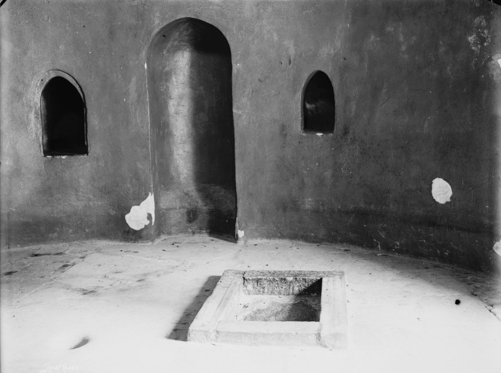
승천하신 자리 · 1898~1914년 사이 감람산 꼭대기에 있는 작은 팔각형 예배당의 안이에요. 바닥의 네모난 돌 틀 안에는 예수님의 마지막 오른발 자국이 남았다고 전해지는 바위가 있어요. 왼발 자국이 있던 조각은 중세에 알아크사 모스크로 옮겨졌대요. 1187년 살라딘이 예루살렘을 차지한 뒤 모스크가 되었고, 1198년에 돌 지붕을 얹었어요. 벽에 움푹 들어간 곳은 기도하는 방향을 알려 주는 벽감이에요. 지금도 그리스도인들은 승천일에만 그 안에서 예배를 드려요. 원본 크게 보기가상 복원 · AI가 색을 짐작해 입힌 것이라 실제 색과 다를 수 있어요.
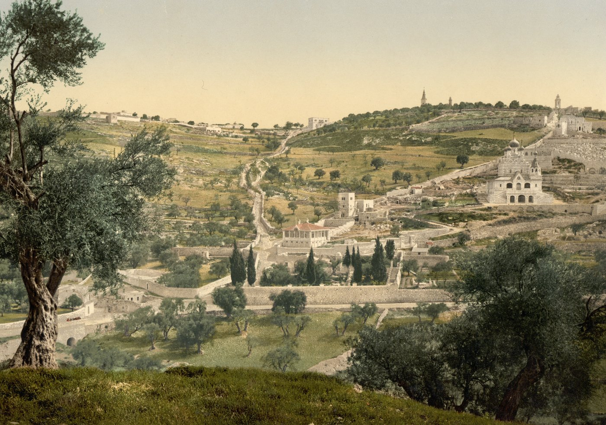
감람산과 겟세마네 · 1890년대 컬러 인쇄본 예루살렘 쪽에서 바라본 감람산이에요. 아래쪽 겟세마네에서 꼭대기까지 걸어서 오를 수 있어요. 성경은 이 산이 예루살렘에서 가까워 “안식일에 가기 알맞은 길”이라고 해요(1:12). 원본 크게 보기
눈 감고 상상해 보기손을 들어 축복하시며 떠나시는 예수님(눅 24:50~51). 멀어지는 모습을 바라보며 마지막으로 들은 약속을 떠올린다면, 그 약속은 무엇이었을까요?
하얀 비둘기에서 노랗고 주황빛 빛이 터져 나옵니다. 작은 불꽃들이 모인 사람들 머리 위로 내려옵니다.
그림 속에서 찾아보기
맨 위의 하얀 비둘기를 찾아보세요. 날개를 어떻게 펼치고 있나요?
비둘기의 빛 속에서 내려오는 작은 불꽃들을 찾아보세요. 어디로 내려오고 있나요?
앞쪽에서 책에 무언가를 쓰는 사람을 찾아보세요. 이 이야기를 기록한 누가예요. 바닥에 놓인 열쇠도 찾아보세요. 누구의 열쇠일까요?
이야기
예수님이 하늘로 올라가신 뒤, 제자들은 약속하신 성령을 기다리며 함께 기도했어요. “오순절 날이 이미 이르매 그들이 다같이 한 곳에 모였더니 홀연히 하늘로부터 급하고 강한 바람 같은 소리가 있어 그들이 앉은 온 집에 가득하며 마치 불의 혀처럼 갈라지는 것들이 그들에게 보여 각 사람 위에 하나씩 임하여 있더니”(2:1~3). 그들은 성령의 충만함을 받고 다른 언어들로 말하기 시작했어요(2:4).
그때 예루살렘에는 명절을 지키러 “천하 각국으로부터” 온 사람들이 머물러 있었어요(2:5). 그들은 갈릴리 사람들이 자기 나라 말로 “하나님의 큰 일”을 말하는 것을 듣고 놀랐어요(2:11). 어떤 이들은 “새 술에 취하였다”고 비웃었지만(2:13), 그날 세례를 받은 사람이 삼천 명이나 되었어요(2:41).
스페인 톨레도의 도미니코회 산페드로 마르티르 수도원 성당의 큰 제단을 위해 화가 후안 바우티스타 마이노가 1612~1614년에 그린 그림이에요. 높이가 2.8미터나 돼요. 이 제단에는 성탄, 주현, 부활, 성령강림 네 장면이 걸렸는데, 스페인 사람들은 이 네 큰 명절을 함께 ‘네 파스쿠아’라고 불렀어요. 성탄절 코스부터 이 코스까지 우리가 걸어온 길과 같지요. 마이노는 1612년 2월 그림 계약서에 서명했고, 이듬해 이 수도원에서 수도사가 되었어요.
이런 그림에서는 흔히 마리아를 한가운데 두는데, 마이노는 마리아를 왼쪽 조금 뒤로 물리고 앞쪽에 베드로와 누가를 크게 그렸어요. 베드로의 발치에 놓인 열쇠는 예수님이 베드로에게 주시겠다고 하신 천국 열쇠(마 16:19)를 나타내요. 누가는 전통적으로 누가복음과 사도행전을 쓴 사람으로 알려져 있지요. 사람들은 놀랐지만 소란스럽지 않고, 조용히 그 순간을 맞고 있어요.
알고 보면
‘오순절’은 ‘50번째 날’이라는 뜻이에요. 유대인의 큰 명절 ‘칠칠절’로, 유월절 무렵 거둔 곡물의 첫 이삭 한 단을 바친 날부터 일곱 주를 세어, 50일째에 새로 거둔 밀로 구운 떡을 바쳤어요(레 23:10~17). 교회는 부활절부터 50일째 되는 날에 성령이 오신 일을 기억하고, 이날을 ‘교회의 생일’이라고도 불러요.
그 시절로 가 보기
그곳은 · 명절을 맞은 예루살렘오순절에는 세계 곳곳에 흩어져 살던 유대 사람들이 예루살렘에 모였어요. 사도행전은 바대, 메대, 엘람에서 로마, 그레데, 아라비아까지 열다섯 곳의 이름을 하나하나 적고 있어요(2:9~11).
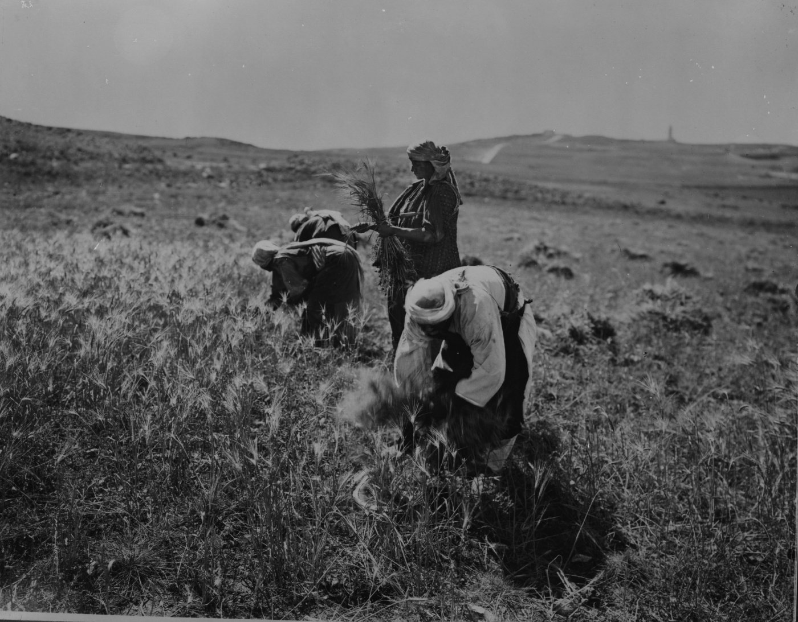
보리 거두기 · 1898~1946년 사이 이스라엘에서는 유월절 무렵 보리를 거두기 시작해요. 그 첫 단을 바친 날부터 50일을 세면, 밀 추수를 기뻐하는 칠칠절(오순절)이 와요. 성경은 이 명절을 ‘맥추절’, ‘칠칠절’이라고도 불러요(출 23:16, 34:22). 원본 크게 보기가상 복원 · AI가 색을 짐작해 입힌 것이라 실제 색과 다를 수 있어요.
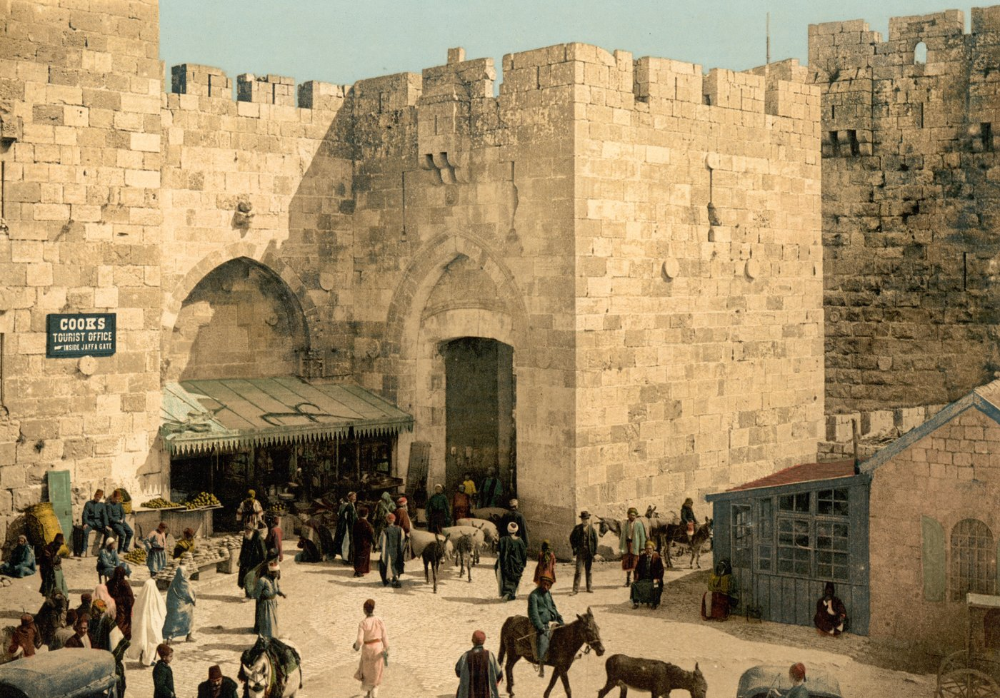
예루살렘 야파 문 · 1890년대 컬러 인쇄본 지중해 항구 야파(욥바)로 가는 길이 시작되는 예루살렘 서쪽 문이에요. 바다를 건너온 순례자들도 이 길을 따라 예루살렘에 들어왔어요. 오순절에 “천하 각국으로부터” 온 사람들도(2:5) 이렇게 여러 길과 문을 지나 예루살렘에 모였겠지요. 원본 크게 보기
눈 감고 상상해 보기문을 닫고 숨어 있던 제자들이 거리로 나가 낯선 나라 사람들에게 말을 걸어요. 나라면 그 사람에게 무엇을 먼저 이야기해 줄까요?
그림: 후안 바우티스타 마이노, 「성령강림」(원제: Pentecostés), 1612~1614년, 마드리드 프라도 미술관. 사진: 위키미디어 공용(저작권 만료). 옛 사진: 미국 의회도서관 매슨 컬렉션, ‘Reaping barley harvest’(1898~1946년, 위키미디어 공용, 알려진 저작권 제한 없음). 1890년대 컬러 인쇄본: 미국 의회도서관 포토크롬 컬렉션, ‘The Jaffa Gate, Jerusalem’(알려진 저작권 제한 없음).
The fifty days of Easter, from the empty tomb to Pentecost, through six works of art. Six Sundays chosen between Easter Day and Pentecost, one picture and one question each: from the morning he called her by name to the Spirit coming like flames.
1 Look at the art together2 Ask the question3 Step back in time4 Read the passage together
Tap Show it to the children under the art to fill the screen with the picture and old photos of the land, one question at a time. Tap a black-and-white photo to switch to an AI-colorized version.
This is a draft awaiting review. AI gathered the sources and wrote the text, so please check each card against ‘Sources’ at the bottom.
Two words tie the six scenes together: “recognized” (Luke 24:31) and “seen the Lord” (John 20:18, 25). Mary, the two disciples on the road to Emmaus, and the disciples on the lake all failed to recognize Jesus at first. They knew him when he called her name, when he broke the bread, when the net came up full. And the news that they had seen the Lord spreads through the Ascension and Pentecost to the uttermost parts of the earth (Acts 1:8).
Noli me tangere Fra Angelico, about 1440 Convent of San Marco, Cell 1, Florence, Italy
Easter Day · The morning he called her by nameMar 28 · Easter Day · John 20:1–18
The question this painting opens
Why didn’t Mary recognize Jesus?
A garden in bloom early in the morning, and a man with a hoe. Mary thought he was the gardener.
Things to find in the painting
Find what Jesus carries on his shoulder. What is that tool used for?
Find the tiny red flowers in the grass. They are the same color as the marks on Jesus’ hands and feet.
Look at the rocky cave behind Mary. What is it? What might it be like inside?
The story
“Now on the first day of the week, Mary Magdalene went early, while it was still dark, to the tomb, and saw the stone taken away from the tomb” (20:1). Mary stood outside the tomb, weeping. She turned around and saw someone standing there, but “didn’t know that it was Jesus” (20:14). “Supposing him to be the gardener,” she asked him to tell her where he had put the Lord’s body (20:15).
“Jesus said to her, ‘Mary.’ She turned and said to him, ‘Rabboni!’ which is to say, ‘Teacher!’” (20:16). At the voice calling her name, she knew him at once. Jesus said, “Don’t hold me,” and told her to go to his brothers and tell them (20:17). Mary went and told the disciples that she had seen the Lord (20:18). She was the first to meet the risen Jesus, and the first to carry the news.
The Convent of San Marco in Florence, Italy, has 44 small cells where the friars prayed and slept. The painter Fra Angelico, himself a Dominican friar, and his workshop painted one story of Jesus on the wall of almost every cell. This painting, 166 centimeters tall, is in Cell 1. Jesus carrying a hoe reminds us that Mary took him for the gardener. The tiny red flowers in the grass are painted the same color as the nail marks on Jesus’ hands and feet.
Good to know
In the Latin Bible, “Don’t hold me” (20:17) is Noli me tangere. That is why paintings of the risen Jesus meeting Mary are all called by this name. John also wrote that Jesus was buried in a new tomb inside “a garden” (19:41). So it made sense to take a man met in the garden for the gardener.
Step back in time
The place · A garden tomb outside Jerusalem’s wallsNear the place where Jesus was crucified there was a garden, and in it a new tomb (John 19:41–42). Since the fourth century, Christians have remembered the site of today’s Church of the Holy Sepulchre as that place. Back then it was outside the city wall, but the city grew, and now it lies inside the Old City.
A rolling-stone tomb at Abu Ghosh · 1940s An old Jewish tomb whose entrance was opened and closed by rolling a round stone along a groove. The women worried, too: “Who will roll away the stone from the door of the tomb for us?” (Mark 16:3). When the archaeologist Amos Kloner examined more than 900 tombs from that time around Jerusalem, only four were closed with round stones like this; most were closed with square stones. View the originalAI colorized · AI guessed the colors, so they may differ from the real ones.The front of the Church of the Holy Sepulchre · 1890s color print The church stands on the place long remembered as where Jesus was buried and rose again. The emperor Constantine began building it around 326 and dedicated it in 335; the main shape of today’s building is the Crusaders’ rebuilding, dedicated in 1149. View the original
Close your eyes and imagineYou were crying, and when you looked up, the person you took for a stranger called your name. How would you recognize that voice?
Take care So that “Don’t hold me” isn’t heard as ‘Don’t touch me, go away,’ talk about it together with the errand Jesus gave Mary (20:17). Please don’t introduce Mary Magdalene as a ‘sinful woman.’ That view is a medieval tradition; the Bible introduces her as the woman from whom seven demons had gone out (Luke 8:2).
See also · For teachers to read further
Try the ‘Easter garden’ (a morning when the stone rolls away) and ‘Easter sunrise service’ activities in the Experience Together room next.
The Annunciation in the Experience Together room is also by Fra Angelico. Set side by side Mary hearing the angel’s news and Mary going to tell the news of the resurrection.
VCS, ‘Making All Things New’: Cell 1, fresco, 166 × 125 cm; tiny red flowers the color of the wounds; Mary’s face flushed from weeping; the medieval idea of Mary Magdalene as the ‘sinful woman’
Painting: Fra Angelico, Noli me tangere, about 1440, Convent of San Marco, Florence. Photo: Wikimedia Commons (public domain). Old photo: Library of Congress, Matson Collection, ‘Jewish tombs with rolling stones at Abou Gosh’ (1940–1946, Wikimedia Commons, no known restrictions). 1890s color print: Library of Congress Photochrom Collection, ‘The front of the Holy Sepulchre, Jerusalem’ (no known restrictions).
The Incredulity of Saint Thomas Cima da Conegliano, about 1502–1504 The National Gallery, London, UK
Second Sunday of Easter · Jesus reaches out his handApr 4 · Second Sunday of Easter · John 20:19–29
The question this painting opens
Why did Thomas want to touch before he believed?
With the disciples standing all around, Thomas reaches out his finger and touches Jesus’ wound.
Things to find in the painting
Find Thomas. Where is his finger touching?
Find the young, beardless disciple right beside Jesus. Old paintings often showed John this young.
Find the white-bearded disciple in an orange cloak with his hand on his chest. How do the other disciples’ faces look?
The story
On the evening of the day Jesus rose, the disciples were gathered behind locked doors, afraid. Jesus came, stood among them and said, “Peace be to you,” and showed them his hands and his side (20:19–20). But Thomas was not there. When the others told him, “We have seen the Lord!”, Thomas said, “Unless I see in his hands the print of the nails, put my finger into the print of the nails, and put my hand into his side, I will not believe” (20:25).
Eight days later, with Thomas there this time, Jesus came again, and spoke to Thomas first: “Reach here your finger, and see my hands. Reach here your hand, and put it into my side” (20:27). Thomas answered, “My Lord and my God!” (20:28). Jesus said, “Blessed are those who have not seen, and have believed” (20:29). He was talking about us today.
Cima da Conegliano, a painter working in Venice, painted this large altarpiece around 1502–1504. It is nearly 3 meters tall. It was ordered by a brotherhood dedicated to Saint Thomas that ran four hospitals in Portogruaro, north of Venice. The surviving account books even list a crate for shipping the painting, the porters’ pay, and a tip for the painter’s assistants. But Cima was not paid even half his fee on time; he went to court and was paid in full only in 1509. The painting has been at the National Gallery in London since 1870.
Good to know
Thomas, “called Didymus” (the Twin, 20:24), was not just a doubter. When Jesus decided to go back to dangerous Judea, it was Thomas who said, “Let’s go also, that we may die with him” (11:16). And when Jesus said he was going away, Thomas honestly asked, “How can we know the way?” (14:5). To that question Jesus answered, “I am the way, the truth, and the life” (14:6).
Step back in time
The place · A locked house in JerusalemThe Bible doesn’t say which house the disciples gathered in. For a long time Christians have remembered the ‘Upper Room’ on Mount Zion as the place of the Last Supper, where the risen Jesus appeared, and where the Holy Spirit came.
The ‘Chamber of the Last Supper,’ Jerusalem · between 1898 and 1946 The Cenacle (Upper Room) on Mount Zion. Today’s room with its pointed arches is a building from around the fourteenth century, and in 1523 it was turned into a mosque and a prayer niche was added. It is not the room as it was 2,000 years ago, but pilgrims remember here the disciples who gathered behind locked doors. View the originalAI colorized · AI guessed the colors, so they may differ from the real ones.The Greek altar at Calvary · 1890s color print The hill of Golgotha, long remembered as the place where Jesus was crucified, is now inside the Church of the Holy Sepulchre. It is where the ‘print of the nails’ Thomas wanted to see came from. It is a ‘photochrom’: color was added to a black-and-white negative and then printed. View the original
Close your eyes and imagineThe disappointment of being the only one who missed what everyone else saw. What would it be like if Jesus came back just for you and held out his hand?
Take care Some children find the finger in the wound frightening. Rather than the finger, help them notice that Jesus came first and held out his hand. Instead of teaching that ‘doubt is bad,’ tell them it is okay to bring their questions to Jesus.
See also · For teachers to read further
Compare it with Caravaggio’s The Incredulity of Saint Thomas in the Experience Together room. Caravaggio painted, close up, Jesus taking Thomas’s hand and guiding it; Cima painted a room with the disciples standing all around.
About a year later Cima painted the subject again. In the painting in the Gallerie dell’Accademia in Venice, Saint Magnus stands with them instead of the disciples, and the scene moves outdoors to a loggia. The Accademia’s description
The National Gallery artwork page: about 1502–4; commissioned by a confraternity dedicated to Saint Thomas that ran four hospitals in Portogruaro; account books listing the crate, porters and a tip for the assistants; paid in full only in 1509 after legal action
The National Gallery, NG816: Thomas places his fingers in the wound; young, fair-haired John in blue on Christ’s right; balding Peter
Art UK: 294 × 199.4 cm, transferred from poplar to a synthetic panel, bought 1870
Painting: Cima da Conegliano, The Incredulity of Saint Thomas, about 1502–1504, The National Gallery, London. Photo: Wikimedia Commons (public domain). Old photo: Library of Congress, Matson Collection, ‘Chamber of the Last Supper, Jerusalem’ (1898–1946, Wikimedia Commons, no known restrictions). 1890s color print: Library of Congress Photochrom Collection, ‘The Calvary and the Greek altar, Jerusalem’ (no known restrictions).
The Supper at Emmaus Caravaggio, 1601 The National Gallery, London, UK
Third Sunday of Easter · When he broke the breadApr 11 · Third Sunday of Easter · Luke 24:13–35
The question this painting opens
When did the disciples on the road to Emmaus recognize Jesus?
An evening table, a hand raised over the bread. In that moment, the two disciples realize who the stranger who walked with them is.
Things to find in the painting
Find the basket of fruit balanced on the edge of the table. Does it look about to fall?
Find the man about to leap up from his chair and the man with his arms flung wide. Why are they so amazed?
Look at the man standing in a cap. Does he know what is happening?
The story
On the very day Jesus rose, two disciples “were going that very day to a village named Emmaus, which was sixty stadia from Jerusalem” (24:13). Jesus came near and walked with them, “but their eyes were kept from recognizing him” (24:16). They were sad as they talked about what had happened in Jerusalem (24:17), and “beginning from Moses and from all the prophets, he explained to them in all the Scriptures the things concerning himself” (24:27).
When they reached the village, they urged him, “Stay with us, for it is almost evening, and the day is almost over” (24:29). At the table “he took the bread and gave thanks. Breaking it, he gave it to them. Their eyes were opened, and they recognized him, and he vanished out of their sight” (24:30–31). They said, “Weren’t our hearts burning within us?” and “rose up that very hour” and went back to Jerusalem (24:32–33).
Caravaggio painted this in Rome in 1601 for the nobleman Ciriaco Mattei. The figures are painted life-size, so the table seems to sit right in front of us. Caravaggio painted the disciples as ordinary working men with ragged clothes and lined faces, and Jesus as a young man without a beard, as if he came from another world. It has been at the National Gallery in London since 1839. Five years later Caravaggio painted the Emmaus supper once more, darker and quieter (Pinacoteca di Brera, Milan).
Good to know
No one knows for sure where Emmaus was. Old manuscripts of the Bible give the distance differently, as ‘sixty stadia’ (about 11 kilometers) or ‘one hundred sixty stadia’ (about 30 kilometers). So several villages west of Jerusalem are each named as Emmaus: Emmaus-Nicopolis, el-Qubeibeh, Abu Ghosh and Motza.
Step back in time
The place · The road west from JerusalemThe two disciples reached Emmaus at dusk, then “rose up that very hour” and returned to Jerusalem (24:29, 33). That means walking a road of about 11 kilometers twice in one day.
A Roman road to Emmaus · 1930s The title in the photographer’s logbook is ‘Roman road to Emmaus showing “Mizpah,” Neby Samwil.’ The hill in the distance, Nebi Samwil, is the traditional tomb of the prophet Samuel, and it is also the hill from which the Crusaders first saw Jerusalem in 1099. View the originalAI colorized · AI guessed the colors, so they may differ from the real ones.A Syrian peasant making bread · 1890s color print Round, flat bread dough being spread out. The bread Jesus broke and gave at the table in Emmaus may also have been bread like this, torn by hand and shared. It is a ‘photochrom’: color was added to a black-and-white negative and then printed. View the original
Close your eyes and imagineSomeone you walked beside for hours without knowing him. If you recognized him the moment you saw his hands break the bread, what would you want to do next?
Take care Jesus has no beard in this painting, which may seem strange to children. Let them know that the Bible doesn’t describe what Jesus looked like, and that every painter pictured him differently. “Their eyes were kept from recognizing him” (24:16) doesn’t mean they couldn’t see; it means they saw him but didn’t know him.
When the two disciples got back to Jerusalem, the others were saying, “The Lord is risen indeed, and has appeared to Simon!” (24:34).
Sources (8)
The National Gallery artwork page: the disciples as ordinary working men with lined faces and ragged clothes; the youthful, beardless Christ who seems to come from a different world
Painting: Caravaggio, The Supper at Emmaus, 1601, The National Gallery, London. Photo: Wikimedia Commons (public domain). Old photo: Library of Congress, Matson Collection, ‘Roman road to Emmaus showing “Mizpah,” Neby Samwil’ (1934–1939, Wikimedia Commons, no known restrictions). 1890s color print: Library of Congress Photochrom Collection, ‘Syrian peasant making bread, Holy Land’ (no known restrictions).
The Miraculous Draught of Fishes Konrad Witz, 1444 Musée d’Art et d’Histoire, Geneva, Switzerland
Fourth Sunday of Easter · Come and eat breakfastApr 18 · Fourth Sunday of Easter · John 21:1–14
The question this painting opens
Did Jesus make breakfast for his disciples?
The net that caught nothing all night is full of fish. Peter can’t wait for the boat, so he jumps into the water.
Things to find in the painting
Find Peter in the water. Where is he going?
Count the disciples pulling up the net in the boat. Can you see the fish?
Find the pointed mountain across the lake, and the faint white peaks behind it. They are real mountains you can see from Geneva, where the painting hung.
The story
This is the story of the risen Jesus showing himself again to his disciples at the sea of Tiberias. Simon Peter said, “I’m going fishing,” and the others went with him, but “that night, they caught nothing” (21:3). When day came, Jesus stood on the beach, “yet the disciples didn’t know that it was Jesus” (21:4).
“Cast the net on the right side of the boat, and you will find some” (21:6). When they did, there were so many fish that they couldn’t haul the net in. The disciple whom Jesus loved said, “It’s the Lord!” and Peter wrapped his coat around him and threw himself into the sea (21:7). On land “they saw a fire of coals there, and fish laid on it, and bread” (21:9). The net held “one hundred fifty-three” great fish, “and even though there were so many, the net wasn’t torn” (21:11). Jesus said to them, “Come and eat breakfast” (21:12).
Konrad Witz, a painter born in Germany who worked in Basel, Switzerland, painted this in 1444 for an altarpiece in St. Peter’s Cathedral in Geneva. Witz moved the Sea of Galilee to Lake Geneva, the lake of the city where the painting would hang. From left you can see the Voirons ridge, the pointed Môle in the middle, and the Salève at the far right, and, faint in the distance, the white peaks of the Mont Blanc range. So this painting is counted among the earliest in Europe to show a real, recognizable landscape. Witz died a year or two after he painted it.
Good to know
In 1986, when a great drought lowered the Sea of Galilee, two fishermen brothers found a 2,000-year-old fishing boat in the mud. It is 8.27 meters long and 2.3 meters wide, and dates from between 120 BC and AD 40. There is no evidence that it is the very boat Jesus and his disciples sailed in, but fishermen in Galilee in those days used boats like this. Today it is in a museum at Ginosar on the lakeshore.
Step back in time
The place · The sea of Tiberias (the Sea of Galilee)John calls the Sea of Galilee the ‘sea of Tiberias’ (21:1). It is called a sea, but it is really a freshwater lake. Peter and Andrew, James and John were fishermen on this lake to begin with.
Fishermen on Galilee throwing a net · 1930s This is a cast net: a round net with weights around its edge. A cast net is about 5 to 6 meters across, yet one person throws it. As it drops onto the water it looks just like a parachute. Fishermen in Galilee 2,000 years ago used nets like this too. View the originalAI colorized · AI guessed the colors, so they may differ from the real ones.A fishing boat at Tiberias · 1890s color print A fishing boat on the lake off Tiberias about 130 years ago. It is a ‘photochrom’: color was added to a black-and-white negative and then printed. View the original
Close your eyes and imagineA morning when you come back worn out after a night of work that came to nothing. If someone had already lit a fire, made breakfast and was waiting for you, how would you feel?
Take care There are many interpretations of the number ‘153’, but for children it’s enough to stay with ‘there were plenty, yet the net didn’t tear’. With older children, also read on to the story after breakfast, when Jesus asked Peter three times whether he loved him (21:15–17). Peter had said three times that he didn’t know Jesus, and here Jesus sets him on his feet again.
See the Holy Land, ‘Jesus Boat’: radiocarbon date 120 BC–AD 40; on display at the Yigal Allon Museum, Ginosar, since 2000; Galilee is a freshwater lake
Painting: Konrad Witz, The Miraculous Draught of Fishes (original title: Der wunderbare Fischzug), 1444, Musée d’Art et d’Histoire, Geneva. Photo: Wikimedia Commons (public domain). Old photo: Library of Congress, Matson Collection, ‘Fishermen on Galilee throwing net from boat’ (1934–1939, Wikimedia Commons, no known restrictions). 1890s color print: Library of Congress Photochrom Collection, ‘Fisherman’s boat on the lake, Tiberias’ (no known restrictions).
The Ascension Giotto di Bondone, about 1304–1306 Scrovegni Chapel, Padua, Italy
Ascension Sunday · Jesus goes up into heavenMay 9 · Ascension Sunday (Seventh Sunday of Easter) · Acts 1:1–11
The question this painting opens
Where in heaven did Jesus go?
Jesus rises past the top edge of the picture. Two angels in white point upward for the disciples.
Things to find in the painting
Find Jesus’ two hands. Are his fingertips hidden behind the edge of the picture?
Find the two angels in white in the middle. Who are they looking at, and where are they pointing?
Among the kneeling people, find Mary in her blue robe.
The story
After he rose, Jesus showed himself to his disciples, “appearing to them over a period of forty days, and speaking about God’s Kingdom” (1:3). And he promised that they would receive power when the Holy Spirit came upon them: “You will be witnesses to me in Jerusalem, in all Judea and Samaria, and to the uttermost parts of the earth” (1:8).
“When he had said these things, as they were looking, he was taken up, and a cloud received him out of their sight” (1:9). While the disciples kept staring into the sky, two men in white clothing stood by them and said, “You men of Galilee, why do you stand looking into the sky? This Jesus, who was received up from you into the sky, will come back in the same way as you saw him going into the sky” (1:11). The disciples returned to Jerusalem from the Mount of Olives and gathered in the upper room (1:12–13).
Like The Raising of Lazarus in the Lent Course, this is one of Giotto’s frescoes in the Scrovegni Chapel in Padua. It is almost the last scene of the story of Jesus that runs around the walls, and the very next scene is Pentecost. Giotto painted Jesus from the side, as if he were climbing upward. His fingertips even reach past the edge of the picture. Mary’s blue robe is said to have been painted with a very costly pigment.
Good to know
Ascension Day is the fortieth day of Easter, counting Easter Day as the first, so it always falls on a Thursday (1:3). That’s why many churches also remember the Ascension on the Sunday after it. Ten days after Ascension Day comes Pentecost. For those ten days the disciples gathered in the upper room and waited for the promised Holy Spirit (1:4, 14).
Step back in time
The place · The top of the Mount of OlivesThe disciples returned to Jerusalem “from the mountain called Olivet” (1:12). It is the hill east of Jerusalem, across the Kidron Valley. Since the late fourth century, a chapel remembering the Ascension has stood on its summit.
The spot of the Ascension · between 1898 and 1914 Inside the small eight-sided chapel on the top of the Mount of Olives. Within the square stone frame on the floor is a rock said to hold the last print of Jesus’ right foot. The piece with the left footprint is said to have been moved to the Al-Aqsa Mosque in the Middle Ages. After Saladin took Jerusalem in 1187 the chapel became a mosque, and in 1198 it was given a stone dome. The niche in the wall shows the direction of prayer. Even today, Christians hold services inside it only on the feast of the Ascension. View the originalAI colorized · AI guessed the colors, so they may differ from the real ones.The Mount of Olives and Gethsemane · 1890s color print The Mount of Olives seen from the Jerusalem side. You can walk from Gethsemane at the bottom all the way to the top. The Bible says this mountain is near Jerusalem, “a Sabbath day’s journey away” (1:12). View the original
Close your eyes and imagineJesus leaving as he lifts up his hands to bless them (Luke 24:50–51). As you watch him go farther away, you remember the last promise you heard from him. What was that promise?
Take care So that children don’t picture ‘heaven’ only as a place far out in space, put it simply: ‘he went to where God is.’ So that they don’t feel his leaving as ‘Jesus left us behind,’ talk about it together with his promise to send the Holy Spirit (1:8).
The last scene of Luke’s Gospel (24:50–53) tells of the same event. Jesus led the disciples out as far as Bethany and lifted up his hands to bless them. “While he blessed them, he withdrew from them, and was carried up into heaven” (24:51).
Richard Stemp, ‘The Ascension’: Jesus risen so high that his fingertips are hidden behind the frame; two angels looking at the kneeling figures and pointing up
Painting: Giotto di Bondone, Ascension, about 1304–1306, Scrovegni Chapel, Padua. Photo: Wikimedia Commons (public domain). Old photo: Library of Congress, Matson Collection, ‘Jerusalem (El-Kouds). Spot of the Ascension’ (1898–1914, Wikimedia Commons, no known restrictions). 1890s color print: Library of Congress Photochrom Collection, ‘Mount of Olives and Gethsemane, general view, Jerusalem’ (no known restrictions).
Pentecost Juan Bautista Maíno, 1612–1614 Museo del Prado, Madrid, Spain
Pentecost · The Spirit who came like flamesMay 16 · Pentecost · Acts 2:1–13
The question this painting opens
Weren’t the flames on their heads hot?
Yellow and orange light bursts out from a white dove. Small flames come down over the heads of the people gathered there.
Things to find in the painting
Find the white dove at the very top. How is it spreading its wings?
Find the small flames coming down from the dove’s light. Where are they going?
Find the man in front who is writing in a book. It’s Luke, who wrote this story down. Can you also find the key on the floor? Whose key might it be?
The story
After Jesus went up into heaven, the disciples prayed together as they waited for the promised Holy Spirit. “Now when the day of Pentecost had come, they were all with one accord in one place. Suddenly there came from the sky a sound like the rushing of a mighty wind, and it filled all the house where they were sitting. Tongues like fire appeared and were distributed to them, and one sat on each of them” (2:1–3). They were all filled with the Holy Spirit and began to speak in other languages (2:4).
At that time there were Jews staying in Jerusalem “from every nation under the sky” (2:5). They were amazed to hear these Galileans speaking in their own languages “the mighty works of God” (2:11). Some mocked them, saying, “They are filled with new wine” (2:13), but that day about three thousand people were baptized and joined them (2:41).
Juan Bautista Maíno painted this in 1612–1614 for the high altar of the church of the Dominican monastery of San Pedro Mártir in Toledo, Spain. It is 2.8 meters tall. Four scenes hung on that altar: Christmas, Epiphany, Easter and Pentecost. In Spain these four great feasts were called together the ‘Four Pascuas’. It is the same road we have walked from the Christmas Course to this one. Maíno signed the contract for the paintings in February 1612, and the next year he became a friar in this monastery.
Paintings like this usually put Mary right in the middle, but Maíno moved Mary a little back on the left and painted Peter and Luke large in front. The key at Peter’s feet stands for the keys of the Kingdom that Jesus promised to give him (Matt 16:19). By tradition, Luke is known as the writer of the Gospel of Luke and the Acts of the Apostles. The people are amazed, but there is no uproar; they meet the moment quietly.
Good to know
‘Pentecost’ means ‘the fiftieth day’. It is the great Jewish festival called the Feast of Weeks. Starting from the day the first sheaf of the grain harvest was offered around Passover, people counted seven weeks, and on the fiftieth day they offered bread baked from the newly harvested wheat (Lev 23:10–17). The church remembers the coming of the Holy Spirit on the fiftieth day of Easter, counting Easter Day as the first, and also calls this day ‘the church’s birthday’.
Step back in time
The place · Jerusalem at the festivalAt Pentecost, Jews who lived scattered all over the world gathered in Jerusalem. The Acts of the Apostles lists fifteen places one by one, from Parthia, Media and Elam to Rome, Crete and Arabia (2:9–11).
The barley harvest · between 1898 and 1946 In Israel the barley harvest begins around Passover. Count fifty days from the day the first sheaf was offered, and you come to the Feast of Weeks (Pentecost), a celebration of the wheat harvest. The Bible also calls this festival the ‘feast of harvest’ and the ‘feast of weeks’ (Exod 23:16; 34:22). View the originalAI colorized · AI guessed the colors, so they may differ from the real ones.The Jaffa Gate, Jerusalem · 1890s color print The west gate of Jerusalem, where the road to the Mediterranean port of Jaffa (Joppa) begins. Pilgrims who crossed the sea also came into Jerusalem along this road. At Pentecost, the people who came “from every nation under the sky” (2:5) must also have gathered in Jerusalem through many roads and gates like this one. View the original
Close your eyes and imagineThe disciples, who had been hiding behind closed doors, go out into the street and start talking to people from faraway countries. If you were there, what would you tell that person first?
Take care Some children may think the flames were real fire and be frightened. The Bible says “tongues like fire” (2:3). Churches understand ‘speaking in other languages’ in different ways. Here, stay with the point that people from many countries each heard them speaking in their own language (2:6, 11).
See also · For teachers to read further
Set it side by side with El Greco’s Pentecost in the Experience Together room. El Greco put Mary right in the middle and painted the people surging upward like flames; Maíno moved Mary aside and painted a quiet amazement.
Follow it with the ‘Church birthday party’ and ‘Holy Spirit pinwheels’ activities in the Experience Together room.
Museo del Prado artwork page: 1612–1614, 285 × 163 cm; the ‘Four Pascuas’ altarpiece of San Pedro Mártir; the contract of February 14, 1612; Mary moved to the left; Peter and the writing Luke in front; the white dove with outspread wings and yellow-orange light; the quiet amazement
Museo del Prado, Maíno exhibition: the ‘Four Pascuas’ (Christmas, Epiphany, Easter and Pentecost); the painter’s years at San Pedro Mártir
Painting: Juan Bautista Maíno, Pentecost (original title: Pentecostés), 1612–1614, Museo del Prado, Madrid. Photo: Wikimedia Commons (public domain). Old photo: Library of Congress, Matson Collection, ‘Reaping barley harvest’ (1898–1946, Wikimedia Commons, no known restrictions). 1890s color print: Library of Congress Photochrom Collection, ‘The Jaffa Gate, Jerusalem’ (no known restrictions).
_LOC_matpc.21098.jpg){kind=link}
.jpg){kind=link}


._Spot_of_the_Ascension_LOC_matpc.06710.jpg){kind=link}